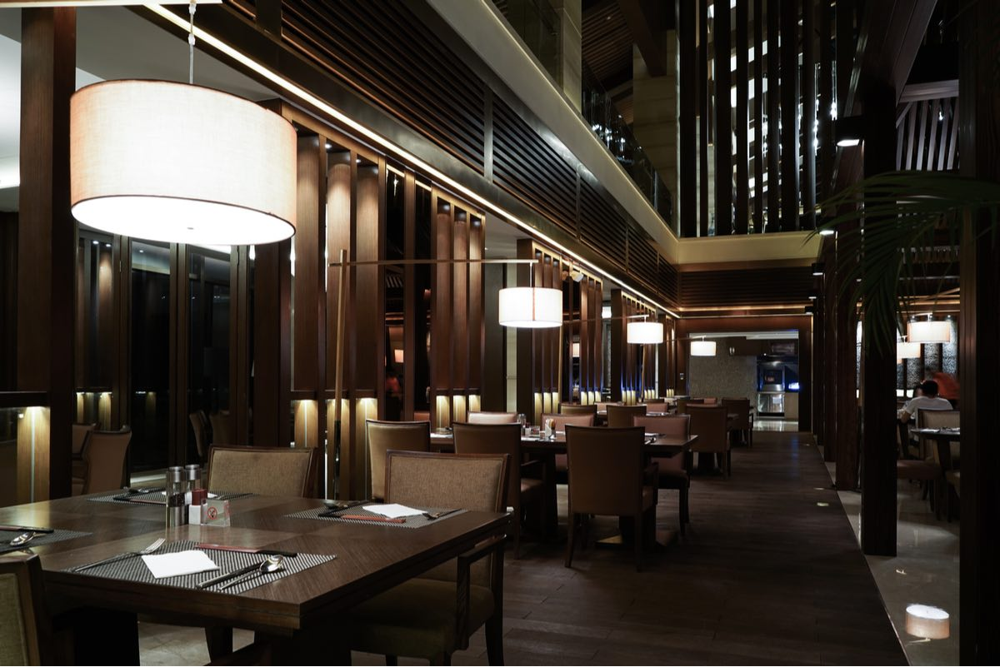

Cocina rica, hecha con mucha ilusión, para gente que le gusta comer y disfrutar cada bocado de la vida…..
Cinco Sentidos es un lugar íntimo en el que puedes saborear a gusto y conversar de forma relajada.
Hacemos todo de forma casera y procuramos poner siempre un toque personal en nuestro trabajo diario, por eso somos un restaurante artesanal.
Tenemos una bonita barra para tomar tapas recién hechas, y un salón con siete mesas en el que puedes sentarte a comer tranquilamente. A mediodía es un sitio informal con menú del día, por las noches es una sala de luces bajas y velas en las mesas… Por eso dicen que somos un restaurante con encanto.

Queremos ofrecerte el marco perfecto para que estés a gusto, para que puedas conversar mientras disfrutas con todos tus sentidos la experiencia que vives. Quienes formamos el equipo de este espacio intentamos en todo momento escuchar lo que quieres para adaptarnos a lo que buscas.
Además, al estar situado junto al WiZink Center de Madrid, puedes visitarnos si vas a un evento en el recinto, te atenderemos lo más rápido posible para que llegues a tiempo, y al terminar, puedes volver a tomar algo y conversar con tus amigos sobre lo que has visto.